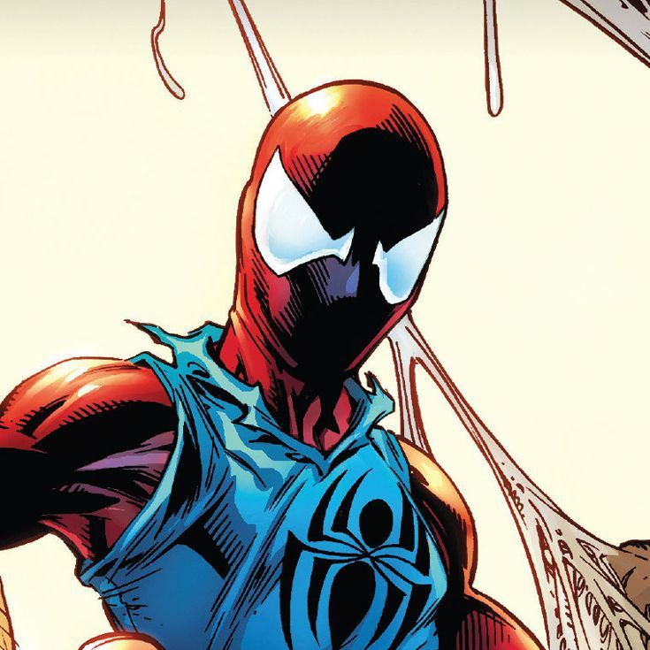

Ben Riley
Ben Reliy is a genetic clone of Peter Parker, the super hero Spider-Man, who went on to establish his own identity as the Scarlet Spider.
Ben Made his suit similar to Spider-Man's consisting of a red spandex bodysuit and mask complemented
by a blue sleeveless hoodie sweatshirt adorned with a large spider symbol on both sides,
along with a utility belt and bulkier web-shooters.
More information about Ben Riley
